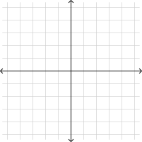
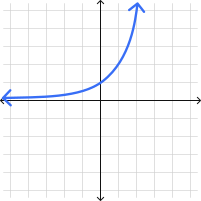
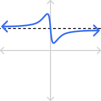
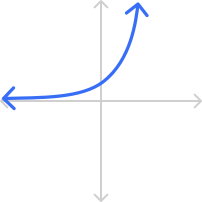
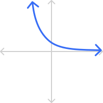
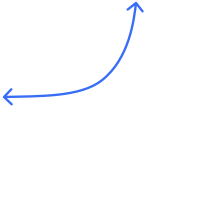

Write your name & answers on a sheet of paper.
What is the general formula for transformations of a function?
\( a\cdot f\big( b\cdot (x-h) \big) +k\)
?
??
\( x^{-2} \) \( = \dfrac{1}{x^{2}} \)
\( x^{-A} \) \( = \dfrac{1}{x^{A}} \)
\( \dfrac{1}{y^{-5}} \) \( = \dfrac{1}{1/y^5} \) \( = 1\div \dfrac{1}{y^5} \) \( = 1\cdot \dfrac{y^5}{1} \) \( = y^{5} \)
\( \dfrac{1}{y^{-B}} \) \( = y^{B} \)
\( \dfrac{x^{-2}}{y^{-5}} \) \( = x^{-2}\cdot\dfrac{1}{y^{-5}} \) \( = \dfrac{1}{x^2}\cdot \dfrac{y^{5}}{1} \) \( = \dfrac{y^{5}}{x^{2}} \)
\( \dfrac{x^{-A}}{y^{-B}} \) \( = \dfrac{y^{B}}{x^{A}} \)
\( x^{2}\cdot x^{5} \) \(= x^{2+5} \) \(= x^{7} \)
\( x^{A}\cdot x^{B} \) \(= x^{A+B} \)
\( \dfrac{x^{5}}{x^{2}} \) \(= x^{5-3} \) \(= x^{3} \)
If \(A> B \), then \( \dfrac{x^{A}}{x^{B}} \) \(= x^{A-B} \)
\( \dfrac{x^{2}}{x^{5}} \) \(= x^{2-5} \) \(= x^{-3} \) \(= \dfrac{1}{x^{3}} \)
If \(A< B \), then \( \dfrac{x^{A}}{x^{B}} \) \( =\dfrac{1}{x^{B-A}} \)
\( (x^{2})^5 \) \(= x^{2\cdot 5} \) \(= x^{10} \)
\( (x^{A})^B \) \(= x^{A\cdot B} \)
\( x^{1/2} \) \( =\sqrt[2]{x^1} \) \( =\sqrt{x} \)
\( x^{A/B} \) \( =\sqrt[B]{x^A} \)
\( (x\cdot y)^2 \) \( = x^2\cdot y^2 \)
\( (x\cdot y)^A \) \( = x^A\cdot y^A \)
\( \left( \dfrac{x}{y} \right)^2 \) \( = \dfrac{x^2}{y^2} \)
\( \left( \dfrac{x}{y} \right)^A \) \( = \dfrac{x^A}{y^A} \)
\( ( x+5 )^2 \) \( = (x+5)(x+5) \) \( = x^2+10x+25 \)
\( ( x+y )^A \) \( = \underbrace{(x+y)...(x+y)}_{A \text{ many times}} \)
\( ( x-5 )^2 \) \( = (x-5)(x-5) \) \( = x^2-10x+25 \)
\( ( x-y )^A \) \( = \underbrace{(x-y)...(x-y)}_{A \text{ many times}} \)
\( 1^{2000} \) \( = 1 \)
\( 1^{A} \) \( = 1 \)
\( 2000^1 \) \( = 2000 \)
\( B^1 \) \( = B \)
\( 0^{2000} \) \( = 0 \)
\( 0^{A} \) \( = 0 \)
\( 2000^0 \) \( = 1 \)
If \(B\neq0\), then \( B^0 \) \( = 1 \)
an exponential function is \(f(x) = b^x\) where \(b\) is a fixed number \(>0\) and \(\neq1\) (notice, the variable is in the exponent!)
Fill out the table and sketch the graph of \(f(x) = 2^x\).
\(x\) |
\(2^x\) |
|---|---|
\(-3\) | \( 2^{-3} = 1/8 \) |
\(-2\) | \( \phantom{-} 2^{-2} = 1/4 \phantom{-}\) |
\(-1\) | \( 2^{-1} = 1/2 \) |
\(0\) | \( 2^{0} = 1 \) |
\(1\) | \( 2^{1} = 2 \) |
\(2\) | \( 2^{2} = 4 \) |
\(3\) | \( 2^{3} = 8 \) |

Fill out the table and sketch the graph of \(f(x) = 2^x\).
\(x\) |
\(2^x\) |
|---|---|
\(-3\) | \( 2^{-3} = 1/8 \) |
\(-2\) | \( \phantom{-} 2^{-2} = 1/4 \phantom{-}\) |
\(-1\) | \( 2^{-1} = 1/2 \) |
\(0\) | \( 2^{0} = 1 \) |
\(1\) | \( 2^{1} = 2 \) |
\(2\) | \( 2^{2} = 4 \) |
\(3\) | \( 2^{3} = 8 \) |

Is there any power of \(2\) that gives you \(0\)?
No
Is there any power of \(2\) that gives you a negative number?
No
instead of going up or down, the end behavior in some graphs flattens to an invisible horizontal line, which we call the asymptote

when \(b>1\), the graph is always increasing, which we call exponential growth

when \(0< b< 1\), the graph is always decreasing, which we call exponential decay

BUT we won’t be transforming in this class! We’ll only have \(b^x\), so all of our exponentials will be very consistent:
horizontal asymptote is always the \(x\)-axis
\(f\)-intercept is always at \((0,1)\) because \(f(0)=b^0=1\)
there is always a point at \((1,b)\) because \(f(1)=b^1=b\)
Let’s graph an exponential \(f(x) = 2^x\).
Mark & label \(f\)-intercept \( (0,1) \)
Mark & label the point \((1,b)\)
Mark & label the
horizontal asymptote
Draw a smooth line to connect
\(x\)
\(f(x)\)
\( (0,1) \)
\( (1,\frac{1}{2}) \)
HA \(f(x)=0\)

Let’s graph an exponential \(f(x) = \left(\frac{1}{2}\right)^x\).
Mark & label \(f\)-intercept \( (0,1) \)
Mark & label the point \((1,b)\)
Mark & label the
horizontal asymptote
Draw a smooth line to connect
\(x\)
\(f(x)\)
\( (0,1) \)
\( (1,\frac{1}{2}) \)
HA \(f(x)=0\)
Suppose \(g(x) = 2^x\) is the parent graph for \( f(x) = \left( \frac{1}{2} \right)^x\). Based on the graph you just drew, what transformation happened?
horizontal reflection/flip (across \(y\)-axis)
How can we change \(g(x)=2^x\) to indicate that transformation?
horizontal flip means \(b=-1\)
so we plug \(b\) INSIDE the parent function:
\(g(x)=2^x\) becomes \(f(x)=2^{-1\cdot x}=\) \(2^{- x}\)
Why is that \(f(x)=2^{- x}\) the same as \(f(x) = \left( \frac{1}{2}\right)^x\)?
\(f(x)= \left( \dfrac{1}{2} \right)^x \)
\( \phantom{f(x)} = \dfrac{1}{2^x} \) <- distribute exponent
\( \phantom{f(x)} = 2^{-x}\) <- rewrite as negative
\( \phantom{f(x)=} \checkmark\)
the natural base \(\boldsymbol{e}\) is an irrational number used as the exponential base in many real-world scenarios
Write out as many digits of \(e\) as your calculator will give you.
Use the calculator you use for exams!!! If you don't have it with you, make sure to practice later—you’ll need to know how to do this!!
Ask me if you need help figuring it out!
\(e \approx 2.718281828459045235360287471352662497757247093699\\9595749669676277240766303535475945713821785251664274274\\6639193200305992181741359662904357290033429526059563073\\8132328627943490763233829880753195251019011573834187930\\7021540891499348841675092447614606680822648001684774118\\5374234544243710753907774499206955170276183860626133138\\45830007520449338265602976067371132007093287091274437470\\47230696977209310141692836819025515108657463772111252389\\\)
-> 4.1 homework